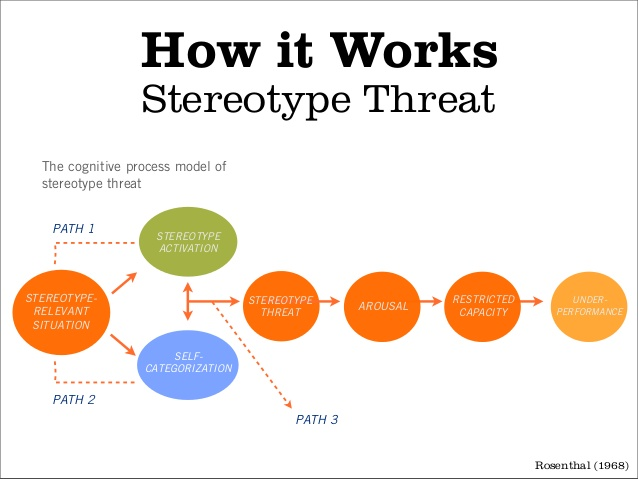

- Blog Posts
- Technical
- VC, Git and Github
- HTML & CSS
- Arrays & Hashes
- Ruby Enumerable Magic
- Intro to Ruby Classes
- FP vs. OOP
- Loops: JS vs. Ruby
- Dynamic vs. Static Typed languages
- Cultural
- DBC warm up
- Abstract Sequential
- Internet & Bias
- Pairing & Feedbacks
- Stereotype Threat
- Values To Live By
- Situations of Conflict
- Cheat Sheets
- SQL
01/30/2015
Stereotype Threat
I was lucky enough to have been raised in a privileged environment. I was educated in one of the best schools in Europe, where people of all background and nationalities were studying together and most students were very smart. My college experience at Wellesley was pretty much similar.
However, after I graduated and started working in Information Technology, I experienced an indirect form of stereotype threat. Not the typical "you made a mistake, that's because you come from a certain ethnic group or gender" type of stereotype threat, but a more subtle one.
There were times when I would work remotely from a wifi cafe. I the curious stares, and moments of disbelief.
What was it about me that could make them so doubtful or surprised that I could be smart?
Trying not to take it to the heart, I thought to myself that not everyone was lucky enough to be open-minded and intelligent. However, there were times when I have witnessed it affecting me. I would become more agitated and it was harder to focus on my work.
I can very much relate to others feeling stereotype threat. It doesn't solely depend on the gender, ethnicity, or the physical appearance in general. You can feel threatened by only talking, thinking, or believing a certain way.
But as my friend would say: "Stop being a victim!".
Although there isn't much to do to change people's prejudices, you can do something to change your own attitude towards them.
You should, of course, continue to ignore these people, but also change your mindset to a more forgiving and hopeful one.
It's helpful to realize that we are in an ever-changing society, and whether or not you know it, every action you do has a consequence on the future generation.
Ignorant people may be surprised to see me working on a laptop, but next time they go to a cafe and see another minority girl working on her laptop, they will get more used to it, which will influence their behavior. This, in turn, will give the girl more confidence, and there you go - a lovely butterly effect!
Let's not forget, finally, that as ignorant as some of the population may be, the USA is still a fast-growing country with surprising discoveries and policies that are made everyday. The society as a whole is used to fast changes, and slowly opening up to the possibility that truly anyone can be smart and successful. Isn't that what this country is about, anyway? ;-)
Optimistically,
-Sam